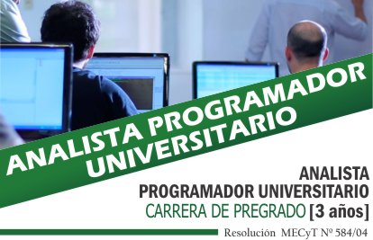
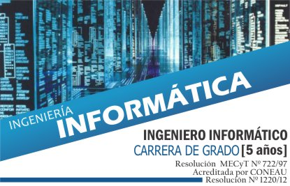

Analista Programador Universitario
El Profesional egresado de la carrera Analista Programador Universitario, tiene la formación, conocimientos y habilidades para:
Manejar los distintos paradigmas de la programación.
Seleccionar y aplicar lenguajes de programación de diferentes características.
Desarrollar un pensamiento lógico y estructurado que le permita un correcto y eficiente desempeño en las actividades relacionadas con la programación y administración de datos.
Es capaz de interpretar e implementar el diseño de una aplicación

Ingenieria en Informatica
El Ingeniero Informático de la Facultad de Ingeniería de la Universidad Nacional de Jujuy posee una sólida formación conceptual en contenidos de Ciencias Básicas,
comunes a todas las Carreras de Ingeniería, para sustento y desarrollo de las disciplinas específicas y un adecuado dominio de las Tecnologías Básicas traducido
en la aplicación creativa del conocimiento de los principios fundamentales de las diferentes disciplinas, a la solución de problemas de Ingeniería Informática.
Desarrolla competencias para la identificación y solución de problemas abiertos de ingeniería, cuyo tratamiento requiera aplicación de conocimientos de Ciencia
Básicas y de las Tecnologías. Está capacitado para la toma de decisiones, la aplicación de técnicas modernas de gestión industrial, la interpretación de tecnologías de
procesos y el sentido económico de las decisiones.
